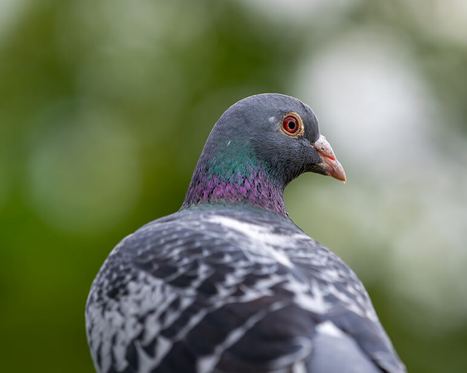

Güvercin (Columbidae), dünyanın hemen her bölgesinde görülen, barışın ve sadakatin sembolü hâline gelmiş zarif bir kuş türüdür. Ortalama 30–35 cm uzunluğa ulaşan güvercinler, gri, beyaz ve kahverengi tonlardaki tüyleriyle dikkat çeker. Güçlü yön bulma yetenekleri sayesinde tarih boyunca haber taşıyıcı olarak kullanılmışlardır. Doğal ortamlarında tohum, tahıl ve küçük bitkilerle beslenen güvercinler, şehir yaşamına da kolayca uyum sağlayarak insanlarla yakın bir ilişki kurmuştur. Sosyal ve uyumlu yapılarıyla çift halinde yaşar, yavrularını büyük bir özenle beslerler. Doğru koşullar altında 10–15 yıl yaşayabilen güvercin, yalnızca estetik güzelliğiyle değil, aynı zamanda kültürel ve sembolik anlamlarıyla da kuş dünyasında özel bir yere sahiptir.